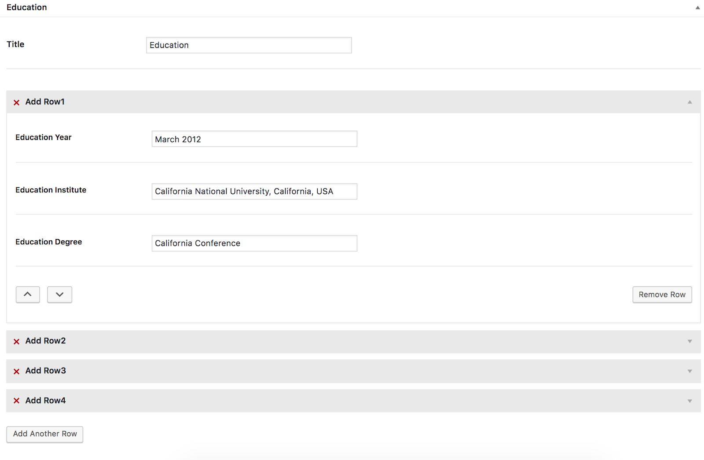

Academix
Academix is a responsive, clean, unique, modern and elegant Multipurpose Researcher and Professor WordPress Theme. The template contains everything you need to create your web presence. It comes with all necessary features for your online presence like slider, team, event, publications, books, services, blog and other.
- created: 08/23/2017
- latest update: 14/03/2022
- by: webtechtoday
- webtechtoday
- Support Tickets: http://webtechtoday.com/submit-a-support-tickets/
Academix - Multipurpose Researcher and Professor WordPress Theme
1. Getting Started
Hi, and welcome to the academix User Guide. The User Guide covers all the information needed to use the academix theme to build an amazing website, as well as some helpful tips and tricks that will make your experience working with the academix theme easier and more enjoyable. If you need any additional assistance while using our theme, you can always submit a ticket to our support forum at https://themeforest.net/user/webtechtoday/ and our support team will be glad to help you out.
You can navigate through different sections of the User Guide by clicking on the links in the menu to the left of your screen. You will also notice that we have highlighted certain parts of the text throughout the User Guide, such as important pieces of information, useful tips, and helpful code snippets, with different formatting for an easier overview. Here are some examples of the different formatting we use for Important Notes, Useful Tips, and Code Snippets:
In this first section of the academix User Guide we will go through the essential steps required to start building your website with the academix theme. We will explain how to install the theme, import the included demo content, as well as how to update the theme. At the end of this section you will also find a set of Frequently Asked Question related to troubleshooting the theme.
Before you can start playing around with your new theme, let's first check what the theme package includes. After you have downloaded the .zip file from Themeforest and unzipped it, it should reveal the following folders:
- Demo Content
- Documentation
- academix.zip Theme
- academix-child Child Theme
Installing academix
After downloading the academix installation file from ThemeForest, extract it and in the extracted folder locate the academix.zip file. You can then install the academix theme using one of two methods described below.
It really doesn't matter at all which one of these techniques you want to use, so choose the one which seems to make more sense to you.
-
WordPress upload - For most users, this is probably the simplest installation method. To install the academix theme using this method, please follow these steps:
- Login to your WordPress admin panel
- Navigate to Appearance > Themes > Add New > Upload Theme
- Click on Choose File and select academix.zip
- Click on Install Now
-
FTP upload - If you would like to install the academix theme via FTP, please follow these steps:
- Extract the academix.zip file you previously located. You should now see a folder named academix
- Using an FTP client, login to the server where your WordPress website is hosted
- Using an FTP client, navigate to the /wp-content/themes/ directory under your WordPress website's root directory
- Using an FTP client, upload the previously extracted academix folder to the themes directory on your remote server
Activate the Theme
Once the installation is complete, your academix theme will be ready for use. Now all you need to do is navigate to Appearance > Themes and activate the academix theme. After you have done this, you should see there one more theme called academix. Find it and just click Activate (if theme was uploaded via FTP).

Or click Activate right after theme was installed (if it was installed with Theme Uploader)
After you have done this, you should also see notification that appears in the left navigation bar of your WordPress admin panel. It require plugins that need to be installed. Please install and activate all of the required plugins, since they are necessary for the theme to function properly
Installation ( One Click Demo Import )
- Find plugin One Click Demo Import and install plugin.
- Navigate to Appearence -> Import Demo Data
- Click On Import. Button
academix WordPress Theme comes with custom one click button import options.So you don’t need to create your site as like ours one by one just hit a button and grab a cup of tea for a while.
Importing Demo Content (optional)
We have include the exported XML files from our demo, this allows you to quickly set up your theme the same way our demo is set up. The XML files is included within the download package which will be used to import the content.
- Navigate to WP Admin -> Tools -> Import.
- Select and install WordPres importer.
- Select the XML file and upload it. It will in few minutes install and upload all content with images.
- Now navigate to WP Admin -> Appearance -> Menus page and select the Primary Menu and assign it to "Primary Menu" location.
- Next, navigate to WP Admin -> Settings -> Reading Settings and set a front page (Home) and a posts page (Blog).
Also you need to set widget settings.
- Navigate to Plugins -> Add New.
- Find plugin Widget Importer & Exporter and install plugin.
- Navigate to WP Admin -> Tools -> Widget Importer & Exporter
- Select the widgets.wie file. You can find it in your package (Demo Content/widgets.wie)
- Click on Import Widgets button.
Updating Theme
You can update your theme by performing the following steps:
- Download the latest theme .zip file from ThemeForest
- Extract it and locate academix.zip
- Extract academix.zip and locate the academix folder
- Copy/Replace the contents of the academix folder to the /wp-content/themes/academix folder of your web site.
Updating Acdemix Core Plugin
You can update acdemix core plugin by performing the following steps:
- Navigate to WP Admin -> Plugins -> Installed Plugins.
- Find Academix Core
- Deactivate Academix Core
- Delete Academix Core
- Click on Begin Installing Plugin
- Install and Active Academix Core
2. Using academix
Once you've installed academix, you can start building your site.
- You can read information about how you can set up your header, upload your logo, create your menu, set up your footer area, customize the general look and feel of your website, and create your first pages.
Building Pages
To create a new page, navigate to Pages > Add New from your WordPress admin panel. Right after that, an ‘Add Title’ text field will appear. Fill up the field with a proper title for the page.
To start adding elements to your page, firstly, make sure that you are in the backend editor’s view.
Look for the Edit With Elementor button on the top of the page. Click on it to enable the Elementor page builder view.
Once you are on the Elementor edit page, You’ll find different Elementor edit options on the left side of the screen. Following that, you can now click on different edit options to start adding different widgets to your page.
Particularly we have a custom Elementor Widgets Panel for only Academix.
Drag and Drop your widgets to the editing page.
After completing the editing, click the Publish button on the lower-left section of the page. (If you have made some changes on an already published page, you will see an Update button instead).

3. Pages
Reading settings. Follow Settings in WordPress Admin Panel and select Reading. Then choose: A static page and select Front page and Post page. Make sure to click 'Save Changes' button, otherwise your changes will be lost.
- Go to Pages > Add New in order to add a new page.
- If you see Edit With Elementor button, that's mean you are editing page in backend builder editor.
The builder is composed of elements that can be added on the page by dragging & dropping them (or by clicking on them).
Choose menu specification
Go to Appearance > Menus. If you want to change menu specification, you need to mark "any menu type you want" and Save changes.
Deleting a menu item
- Select the menu item that you want to delete from the menu editor screen.
- Press on the arrow icon in the top right-hand corner of the menu item/box to expand it.
- Click on the Remove link. The menu item/box will be immediately deleted.
- Click the Save Menu button to save your changes.

4. Blog
In this section of the User Guide we will discuss the creation of blog posts and all the available options for each post, setting up pages to display blog listings, as well as how to change the date format for your posts.
Blog Posts
To create a new blog post, go to Posts > Add New from your WordPress admin panel. First, you need to enter a title for your blog post in the text field near the top of the screen. Then choose a format for your blog post in the Format section on the right side of the screen.
Let's take a look at the available blog post formats:
- Standard - This is the default blog format.
Now it's time to categorize this post:
- Beneath the Format section you will see a section named Categories. Here you can select the categories that you would like to add this post to. If you would like to create a new category, click on the + Add New Category link. A text field will appear in which you can enter a category name, and then click Add New Category.
- Once you've selected the categories you would like to add your post to, click the Publish button. Congratulations, you've just published your first blog post!
- Beneath the Categories section you will see the Tags and Featured Image sections. Here you can add tags to your post, and set a featured image which will be displayed for this post on blog list pages.
Now that we have published our first blog post, let’s go over the available custom fields for blog posts.
By choosing one of the blog templates you will have set this page to automatically show a list of your blog posts. All you need to do now is publish the page.
Date Format
If you wish to change the date format on blog posts, navigate to Settings > General > Date Format from your WordPress admin, and select your format of choice.
5. Troubleshooting FAQ
Troubleshooting FAQ
1. Why can't I save my menu?
WordPress by default has a limited number of menu items. When you import our demo content, which contains a lot of menu items, you might not be able to save changes you make to a menu. You can fix this problem by contacting your hosting and asking them to add the following lines to the php.ini file:
suhosin.post.max_vars = 5000 suhosin.request.max_vars = 5000
2. Why is there a smiley displayed on blank pages?
This problem is most likely related to JetPack and memory settings of your hosting. You can either disable JetPack or read what the JetPack developer wrote: Regarding the memory limit, please refer to the WordPress Codex section concerning this problem. Some sites that load many plugins alongside WordPress ultimately require a higher memory limit than WordPress defaults to, but since this is limited to specific hosts and configurations, it must be dealt with on an individual basis. You'll find the Codex article at: http://codex.wordpress.org/Common_WordPress_Errors#Allowed_memory_size_exhausted
3. How do I optimize my site?
Please use this tool to investigate reasons for slow loading: https://developers.google.com/speed/pagespeed/insights/?hl=en
4. How to translate or rename default theme labels?
You can use the Poedit software (http://poedit.net/wordpress) to translate/rename all the theme's labels. Another solution is to edit the theme folder/languages/en_US.po file directly in a text editor and manually edit the labels you want to translate.
5. Why do I see a white screen when importing demo content?
If you get a white screen or some other error when trying to import our demo content, this probably happens because of the maximum execution time limit or max upload file size. You need to increase the maximum execution time (upload time) setting of your web server. The default maximum execution time on web servers is 30 seconds. Please increase it to 120 seconds. Also you may have to increase a limitation of Upload File Size with your Hosting Provider to Max Upload File Size. Possible ways of achieving this are:
- By Wp-config.php changes - set_time_limit(120);
- In htaccess - php_value max_execution_time 120;
- In php.ini file - max_execution_time = 120
Ask your hosting provider to take care of this for you.
Elementor
Why do I have an error message about Elementor?
Theme indicates the king composer has an update, however below we can see error message. You don't need to pay attention on this error. We are using the Elementor plugin as a simple layout builder with our personal shortcodes, it should not give you any discomforts!
Can I use Elementor shortcodes?
You are able to use all the Elementor shortcodes which are related to this theme (theme is created only with that shortcodes that you can use in the moment). However you can use all other shortcodes, but they may not display correctly. Because they are not stylized to the theme styles.
Child and Parent theme
A WordPress child theme takes the functionality of another theme, named parent theme. It gives you the possibility to customize an existing theme. Instead of modifying the theme files directly, you can activate the child theme and work within it. All customizations are stored in the child theme and anything in the child takes priority over the parent. So if the same file exist in both child and parent, the file from the child will control that aspect of the theme.
Working with child themes, your customizations are safeguarded from future upgrades because you only upgrade the parent theme, which you never edit, while the customizations are protected in your child theme which you don’t upgrade.
Why use a Child theme?
Safe Updates. You can easily modify your website using child themes without ever changing the parent theme. When a new version of the parent theme appears, you can safely update it as all your modifications are saved in the child theme.
Easy to Extend. A child theme has a great flexibility. It does not require writing a lot of code. You can modify only those template files and functions that you need.
Notice! When you install one of our themes you must upload both parent and child theme folders to /wp-content/themes/ but you should only activate the Child theme via Appearance > Themes.
Modifying files from the Parent theme folder
While you should never edit files in your Parent theme, if you really must, the safest way to do it is to download a copy of the file you want to modify on your computer, make the changes, and then upload it into your child theme folder.
This way of modifying the files can be used for any files from the parent theme — note that you must re-create the same folder structure in your child theme that exist in the parent theme in order for the modifications to take effect.
7. General Settings
The General Settings page controls some of the most basic configuration settings for your site: your site's title and location, who may register an account at your site, and how dates and times are calculated and displayed.
- Site Title- lets you enter the name of your site (or blog).
- Tagline- your site's slogan, or short phrase, or sentence, used to convey the essence of the site and is often funny or eye-catching.
- WordPress Address (URL)- the full URL of the directory containing your WordPress core application files (e.g., wp-config.php, wp-admin, wp-content, and wp-includes). For example, if you installed WordPress into a directory called "blog", then the WordPress address would be http://example.net/blog (where example.net is your domain). If you installed WordPress into your web root, this address will be the root URL http://example.net.
- Site Address (URL)- the address you want people to type in their browser to reach your WordPress site. This is the directory where WordPress's main index.php file is installed. The Site address (URL) is identical to the WordPress address (URL) (above) unless you are giving WordPress its own directory.
- E-mail Address- the email address to which you want WordPress to send messages regarding the administration and maintenance of your WordPress site. For example, if you allow new users to register as a member of your site (see Membership below), then a notification will be sent through e-mail to this address.
- Membership- check this checkbox if you want anyone to be able to register an account on your site.
- New User Default Role - this pull-down box allows you to select the default Role that is assigned to new users.
- Timezone - lets you select your timezone, choose a city that is in the same timezone as you are.
- Date Format - the format in which to display dates on your site.
- Time Format - the format in which to display times on your site.
- Week Starts On- lets you select your preferred start date for WordPress calendars from the drop-down box, Monday being the default setting.
- Site Language - the WordPress dashboard language.
8. Using permalinks
Permalinks are the permanent URLs of your blog posts or pages on your WordPress site.
- Go to Settings > Permalinks.
- Select one of the available formats:
- Plain: http://www.yourwebsite.com/?p=123
- Day and name: http://www.yourwebsite.com/2008/03/31/sample-post/
- Month and name: http://www.yourwebsite.com/2008/03/sample-post/
- Numeric: http://www.yourwebsite.com/archives/123
- Post name: http://www.yourwebsite.com/sample-post
- Custom structure in the box enter the custom structure you want to use. For example: /archives/%year%/%monthnum%/%day%/%postname%/
- In the Optional section you'll find 2 prefixes used in URLs for category and tag archives:
- Category base box enter the custom prefix for your category URLs.
- Tags base write the custom prefix for your tag URLs
- Don't forget to click the Save Changes button
- After, you should receive two messages regarding your .htaccess
- In case your .htaccess is writeable you will receive this message: Permalink structure updated
- In case you .htaccess is not writeable you will get this message: You should update your .htaccess
9. Theme Options / academix Options
academix Theme comes with a very powerful Theme Options panel based on Redux Framework. After the theme is installed you can access this panel by logging into the Wordpress dashboard and clicking on academix Options.
Notice:Before leaving the 'Theme Options/academix Options' tab make sure to click the 'Save changes' button at the top of the panel, otherwise your changes will be lost.
10. Widgets
In this section of the User Guide we will discuss the available widgets and widget areas in the theme.
Widgets are easy to manage and can be incredibly useful to have on your site.
For theme, we have developed custom widgets and widget areas in order to provide you with even more functionality. You also have the option of creating your own custom sidebars (custom widget areas).
Widgets add content and features to your Sidebars. In order to access the widgets page go to Appearance > Widgets. The Widgets area on the left hand side is composed of 2 sections:
Available Widgets -all the widgets you can use in your sidebars.
- Archive - You can monthly archives of your site's Posts.
- Calendar - You can use this widget area to calendar of your site's Posts.
- Categories - You can use this widget area to add a list of drop-downs categories.
- Custom Menu - You can use this widget area to add custom menu.
- Academix Custom Recent Post - You can use this widget area to add recent posts to your site.
- Academix Custom Latest Event - You can use this widget area to add latest events to your site.
- Meta - You can use this widget area to customize login, rss, links.
- Pages - You can use this widget area to customize a list of your site's pages.
- Recent Comments - You can use this widget area to customize site's more recent comments.
- Recent Posts - You can use this widget area to customize most recent posts
- RSS - You can use this widget area to entries from any RSS and Atom field.
- Tag Cloud - You can use this widget area to customize a cloud of your most used tags.
- Text - You can use this widget area to customize arbitrary text or html.
Inactive Widgets - drag widgets here to remove them from the sidebar but keep their settings. You can drag widgets to that section to remove them from the sidebar but keep their settings.
11. Teams
To add new Team Member please go to your [ Dashboard > Teams ]. Here you will see all the team members list. If you wants to edit any existing team member please hover over any member and you will see the edit option. Click edit and it will take you to edit page. Please change all the necessary information then click update. That's it.
1. Input Name, Biography, Add Category
2. Enter Designation, Institute Information, upload Page banner and Member Profile Image:
3. Enter Contact Information
4. Enter Education Information of Member
5. Enter Personal Experience
6. Enter Awards Prizes:
7. Enter Social Profile
12. Custon Post Type Settings
We have created several custom post types eg. Teams, Events, Books etc. You can change the slug (which is used as part of url) of these custom post types easily. To do this, go to Settings -> Academix Url Settings.
Note: After Save that go to Settings>Permalink and Save the settings. ( it’s called url flash manually ).
13. Contact Forms Import
We have include the exported JSON files from our demo, this allows you to quickly set up your contact form. The JSON files is included within the download package. Extract academix-wp-theme.zip and locate the Demo Content folder [fluentforms.json file]
- Navigate to WP Admin -> Fluent Form -> Export/Import.
- Select Import Forms.
- Select the JSON file and upload it. It will install in few Seconds.
- Now navigate to WP Admin -> Fluent Form -> All Forms See all forms are there